In May my mother and I visited Egypt because there is the warm weather, it needn’t in advance obtain a vise and we could afford it. We chose a hotel “Ali baba”, I want to tell about and we had a really good vacation, because there was the excellent sea, beach, food, service and big, well-attended territory.
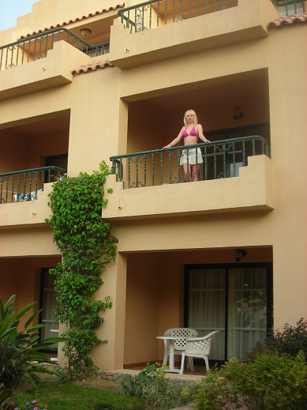
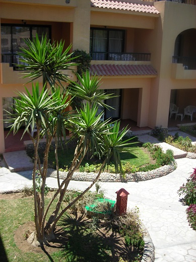
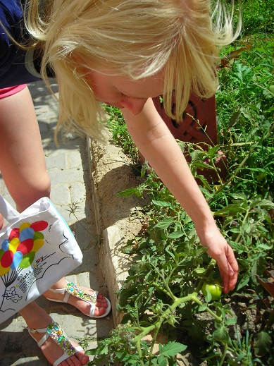
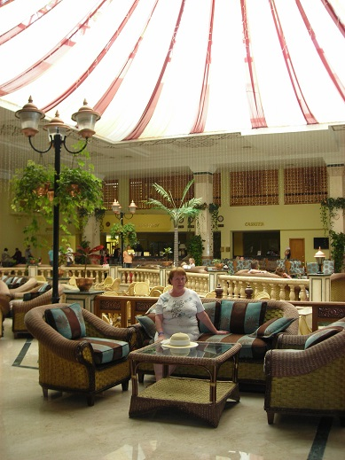
We arrived at about 11.00 pm, and after leaving our luggage in room, went to look for the sea. To the sea leads to a long straight road. There was very dark and unpeople, so we frightened and decided to find the sea the next day. The room was enough big. Furniture wasn’t new but all was clean and nice. Our chambermaid leaved us every day four 0,5 bottles with clean water. Late we knew that our room wasn’t in the most popular place, but decided not to change, because we didn’t want to pack things into a suitcase again and it could be worse. I don’t know why we were got the room in that place, may be because we are Russian, may be it’s just fortuity. Near to our bungalow was growing a tomato, once I saw how cleaners tore small green tomatoes and threw to each other as a joke.
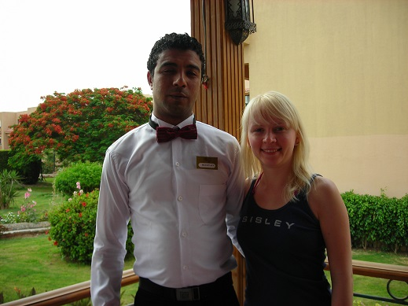
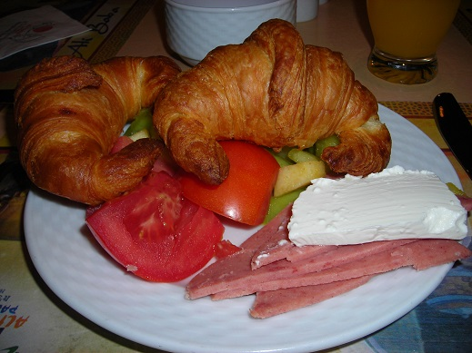
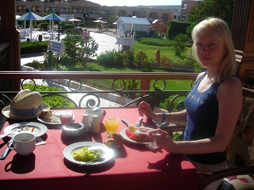
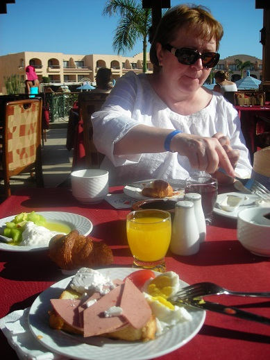
Our room had one big advantaged: it was near to the restaurants, pool’s bar, the main part of pool and sport hall (to say true, we didn’t use one) 🙂 In the hotel there are 3 restaurants and 2 bars. The food was various and tasty. I’m keen on fresh sheep cheese!!!! Moreover, we could eat in the other hotels’ restaurants and bars and ALL INCLUSIVE!!! It’s impossible don’t say about Egypt’s sweets, that are so tasty! In Egypt only men usually work, so all waiters were men and they work really in an enormous fast rhythm!
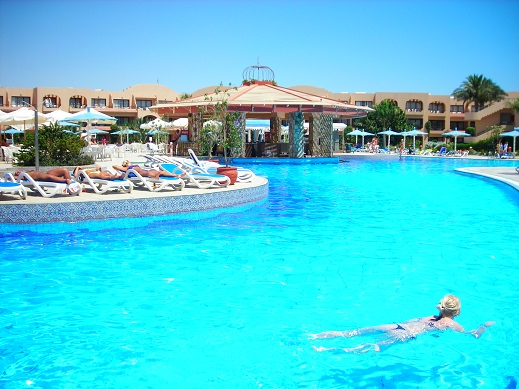
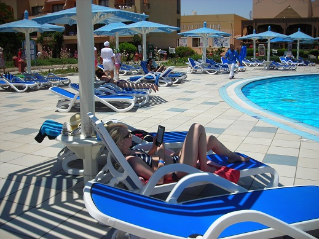
In the middle of our hotel’s area there is a long, winding swimming pool. It’s a pity that I hadn’t the flippers. I could swim along all pool than. The most depth is 1.40 meters. For children there is an another small, round pool. If you go along the pools, you will arrive to the beach. For me it’s the most important thing, if I have a rest on the sea.
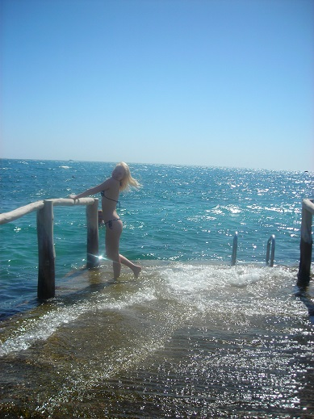
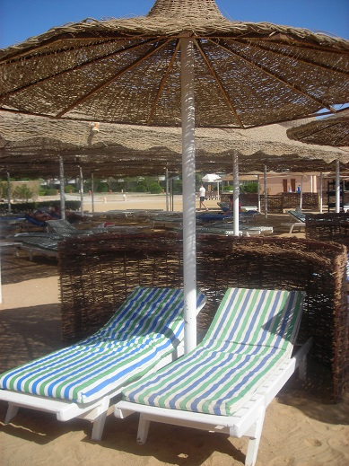
The sea and the beach were very good! But in the first day we were very surprised when returned to the beach after lunch, the sea moved away may be more than 8 meters! Tides were every day, but for children and for me (I almost can’t swim) it was fine, because there were not deep areas, about 2-3 meters long, so we could wallow in very warm water. Sometimes, during flows there were medusas, children played with them, carried in arms or buried into sand. But I was terrified to death, when met them. Some people swam in flippers and mask for seeing corals, especially the German people. Beach’s staff was polite and nice, I like the way how a worker picked up glasses (I took a photo).
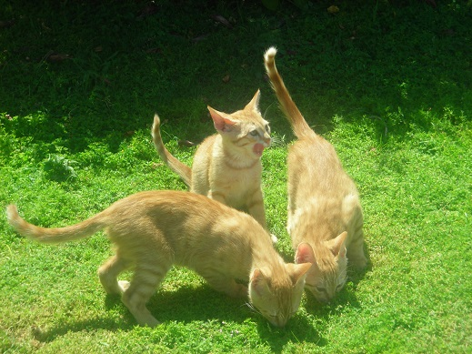
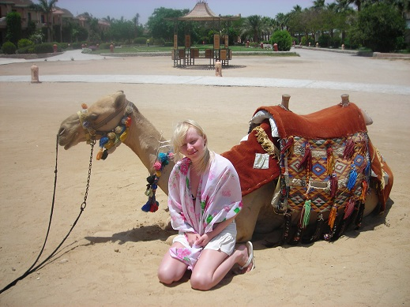
These are just some additional photos. There are a lot of flowers and different trees on the hotel’s area. We met some cats. Three kittens lived near to the restaurant. Every evening we saw different shows. It’s my first article and, I think, I’ll be edit it a lot.
Summaries:
1 – I need a better camera
2 – It’s necessary to have different clothes (for restaurant, for disco, walking outside hotel’s area)
3 – I won’t buy anymore a sunscreen Lancaster (it’s very expensive and spends very fast), I’ll continue using Garnier
4 – If I am in this hotel again, I’ll buy flippers
5 – I should learn English